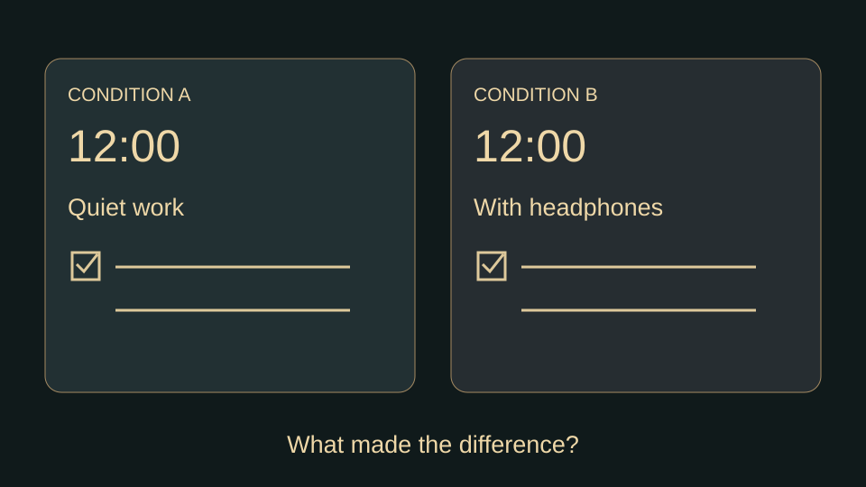

Final Vestige · Mind & Perception · Review only
Before You Buy Twelve Minutes of Focus
What the package contains, where the evidence ends, and a useful free alternative.

Read the optional 42-second film transcript
Twelve minutes. Two ways to begin. One person presses play; the other starts in silence. Both complete the same small task. What did the work—the sound, or the decision to start? Research on auditory stimulation finds mixed results, and brainwave entrainment has not been established as a reliable shortcut. An enjoyable listening experience is not the same as a proven cognitive benefit. Try the simple task first, then examine the exact product tier, cost, evidence and return terms. It is entirely reasonable to decide you do not need an audio purchase.
Six-cue caption concept supplied for production review. Video is not encoded or downloadable.
The first twelve minutes cost nothing
Choose one small task, mute interruptions, and write down a measurable outcome after twelve minutes. The experiment is useful even if you never buy a recording. Our existing Seven Day Focus Fieldbook explains a longer reflective routine.
The product being considered
Zen12's public seller page distinguishes Beginner: six levels and 24 MP3s, Premium: twelve levels and 48 MP3s, and Advanced: final six levels and 24 MP3s. Promotional prices observed November 12, 2026 are not final checkout totals. The seller advertises a one-year guarantee; the actual terms must be checked at purchase.
What the research does—and does not—prove
Studies of binaural-beat entrainment have yielded mixed outcomes. A 2023 systematic review found inconsistent EEG results, and a 2024 review found sound/cognition links mixed or insufficient for broad conclusions. These are not independent trials of Zen12, and do not prove that twelve minutes replaces an hour of meditation.
Before paying, ask
Do I value short, structured listening more than silence? Do I need Beginner or the complete Premium collection? Is the selected item exactly what the checkout delivers? Will I receive a file I can use on my device, and what are the refund exclusions? Have I confused pleasant listening with clinically established benefit?
For the wider history of testimony and suggestion, explore our Puységur archive. The historical evidence remains separate from commercial audio claims.
Affiliate disclosure: If Final Vestige later publishes an approved earning link and you purchase through it, we may receive a commission at no additional cost to you. Partner approval and link terms are not yet verified.
The independent guide and free Fieldbook are accessible without using a merchant link or joining a new email list.